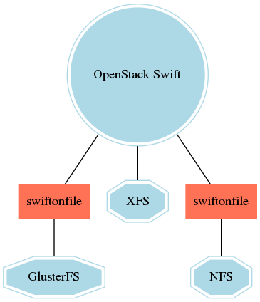

Breaking the Mold:
OpenStack Swift
+
GlusterFS
John Dickinson
PTL, OpenStack Swift
Director of Technology, SwiftStack
Luis Pabón
PTL, Gluster-Swift
Principal Software Engineer
Data consumption models have changed
make image bigger, better image?Parts of swift
Swift Use Case
integration with openstack

Swift Extensibility:
API Middleware
- Lots of included functionality
- Transcoding
- Caching
- Search
- Compute
Swift Extensibility:
Volume Abstractions
- Swift-on-File (née gluster-swift)
- Seagate Kinetic
- ZeroVM
storage policies
GlusterFS as a Backend for Swift
Introduction to GlusterFS
Use Case:
Multiple protocol access

April 2012
GlusterFS patch for OpenStack Swift
No automated testing
0 developers on OpenStack Swift
1 developer on patch for Swift
Great idea,
bad executio
n
April 2013
gluster-swift repo
GlusterFS as a backend to OpenStack Swift
Full CI automated testing
2 developers on OpenStack Swift
6 developers on gluster-swift
Pluggable Object Interface
Worked with the OpenStack Swift community to develop a pluggable interface to the object server. The interface is used by gluster-swift as well as other community members for their own backend storage systems.
Great idea,
well executed
...but we can
do better
April 2014
Increased participation in OpenStack Swift
Identified gluster-swift technology is based on POSIX file semantics
gluster-swift project renamed to swiftonfile
5 developers on OpenStack Swift
3 of the developers to also work on swiftonfile
Swiftonfile as a Storage Policy
Innovation through collaboration
“In general, open source projects, products, or initiatives are those that embrace and celebrate open exchange, collaborative participation, rapid prototyping, transparency, meritocracy, and community development.”
This is as awesome as...

Credit: Christopher Hastings ( http://www.drmcninja.com )